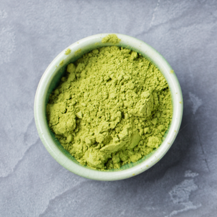
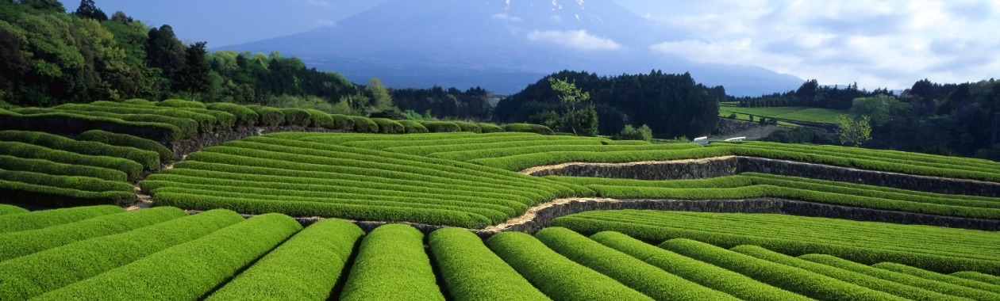
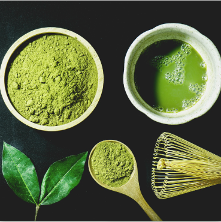
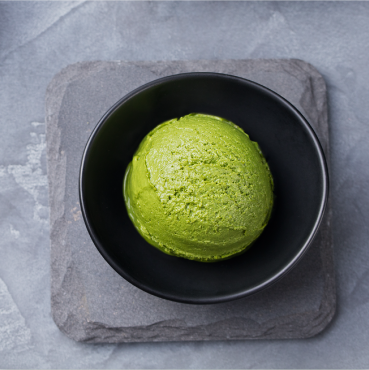
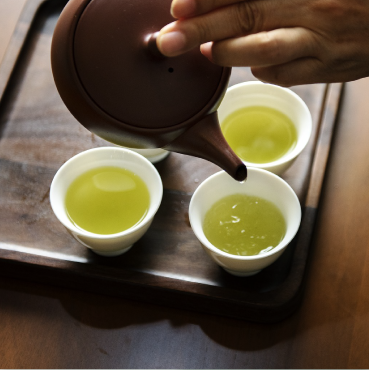
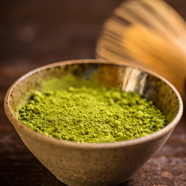

抹茶とカフェインについて
抹茶にはカフェインが含まれていますが（コーヒーのカフェイン量の約10分の1）、抹茶が体にカフェインを供給する方法はコーヒーやエネルギードリンクとはまったく異なります。
抹茶のカフェインは身体に吸収されたのち、4〜6時間かけてゆっくり放出されます。コーヒーのようにカフェインを急激に体に吸収&放出することで、引き起こされる「ジッタ（だるさや気持ち悪さを起こす現象）」なしで、エネルギー補給できることを意味します。


☰



抹茶にはカフェインが含まれていますが（コーヒーのカフェイン量の約10分の1）、抹茶が体にカフェインを供給する方法はコーヒーやエネルギードリンクとはまったく異なります。
抹茶のカフェインは身体に吸収されたのち、4〜6時間かけてゆっくり放出されます。コーヒーのようにカフェインを急激に体に吸収&放出することで、引き起こされる「ジッタ（だるさや気持ち悪さを起こす現象）」なしで、エネルギー補給できることを意味します。

お茶はアミノ酸テアニンを作る唯一の植物です。
テアニンは抹茶に含まれる旨味成分のことで、α波を出し、興奮を鎮めて緊張を和らげるリラックス効果（禅の状態）があることで知られています。
ある実験では、テアニンがやる気や意欲を高めるドーパミンを増加させることによって、記憶力を改善する効果があることも報告されています。
寿司屋では食中毒を防ぐためにも殺菌作用の高い緑茶を出していると言われています。
食中毒の原因とされる細菌は緑茶を飲むことで死滅すると言われており、昔から食中毒予防に欠かせない飲料としても日本人に親しまれてきました。
その他虫歯や口臭の予防にも効果があると言われています。

カテキンには強力な抗酸化作用があります。
万病の元といわれる活性酸素を取り除く効果が期待でき、老化防止や生活習慣病の予防に役立つと言われています。

カテキンには強力な抗酸化作用があります。
万病の元といわれる活性酸素を取り除く効果が期待でき、老化防止や生活習慣病の予防に役立つと言われています。
抹茶の原料となる茶葉は、職人の手で約1年もの年月をかけて栽培されています。
手間ひまかけて大事に育てた茶の新芽だけを摘んで、何回も選別して丹念に石臼で挽きます。
1つの石臼で挽く抹茶の量は1時間にたった40g～60gほどしかありません。
抹茶は現代における最高の嗜好品なのです。

抹茶は1000年ほど前に中国から日本へ伝わりました。 当時はお茶は医薬品として扱われ、貴族や有力層だけが飲める高級品でした。 500年ほど前に「千利休」によって、茶道の原型は完成され、長い間をかけ日本の文化に日本を代表する文化の一つとなりました。
※茶道とは、伝統的な様式にのっとって客人に抹茶をふるまう事。 茶を入れて飲む事を楽しむだけではなく、生きていく上での目的・考え方、宗教、そして茶道具や茶室に飾る美術品など、広い分野にまたがる総合芸術として発展しました。